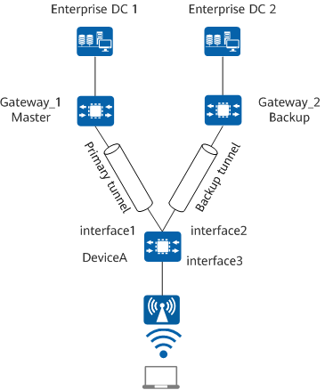

Understanding the EoGRE Primary/Backup Solution
Fundamentals
On the network shown in Figure 1, an enterprise deploys two DCs to ensure network security and reliability through remote disaster recovery. A STA is dual-homed to Gateway_1 and Gateway_2 through EoGRE tunnels on DeviceA, and then connects to the two DCs. The EoGRE primary/backup solution deployed on DeviceA can switch user services to the standby DC upon network interruption of the active DC. The EoGRE gateway changes upon a switchover between the active and standby DCs, interrupting user services. In this case, the STA needs to apply for the gateway address again.

In this example, interface 1, interface 2, and interface 3 represent Tunnel 1, Tunnel 2, and Virtual-Ethernet 0/0/1, respectively.

After you bind a VE interface to two tunnel interfaces on DeviceA and specify the corresponding priorities, the tunnel with a higher priority functions as the primary tunnel, and that with a lower priority functions as the backup tunnel. The gateway corresponding to the primary tunnel is the master gateway, and that corresponding to the backup tunnel is the backup gateway.
If no fault occurs on the network, the EoGRE tunnel corresponding to a tunnel interface is up and ready to forward data only when the tunnel interface bound to the VE interface is up and the interface role is active.
The role of a tunnel interface is determined by the interface status and the primary/backup tunnel status. When the interfaces of the primary and backup tunnels are both up, the roles of the interfaces are active and standby, respectively.
The status of a VE interface changes with the status of tunnel interfaces bound to it. The VE interface is up as long as one tunnel interface is up.
EoGRE Heartbeat Detection Mechanism
EoGRE encapsulates Ethernet packets using GRE and transmits the encapsulated packets over a network running another network layer protocol, such as IPv4. In this manner, Ethernet packets can be transparently transmitted over GRE tunnels.
GRE does not provide the link status detection function. To ensure that the peer device can detect the GRE tunnel status in a timely manner, DeviceA provides the heartbeat mechanism. Once detecting that the peer end of a GRE tunnel is unreachable, the device stops sending packets to the peer end to reduce resource and bandwidth consumption.
DeviceA supports heartbeat detection based on Keepalive packets, and devices at both ends of a GRE tunnel must support the Keepalive protocol.
After heartbeat detection is configured on DeviceA, DeviceA periodically sends heartbeat packets to the peer gateway to detect the link status. The detection process is as follows:
- If the counter value on DeviceA reaches the preset value but DeviceA does not receive any reply packet from Gateway_1, DeviceA considers Gateway_1 unreachable. Then, Tunnel 1 goes down and switches its role to standby, the primary tunnel stops working, and Gateway_1 switches its role from master to backup.
- If DeviceA receives a reply packet from Gateway_2 before the counter value on DeviceA reaches the preset value, DeviceA considers Gateway_2 reachable. Then, Tunnel 2 goes up and switches its role to active, the backup tunnel starts to work, and Gateway_2 switches its role from backup to master.
EoGRE Primary/Backup Switchback Mechanism
On the network shown in Figure 2, the primary and backup EoGRE tunnels are deployed, and the primary tunnel is in the standby state due to a fault. By default, a primary EoGRE tunnel does not proactively switch to the forwarding state after fault recovery. You can enable preemption for the primary and backup EoGRE tunnels. Then, after recovering from a fault, the primary EoGRE tunnel switches to the forwarding state after the configured preemption delay expires.
If Gateway_1 or the link of the primary tunnel between Gateway_1 and DeviceA recovers, the primary tunnel switches back to the forwarding state depending on whether preemption for the primary and backup EoGRE tunnels is enabled.
- If preemption for the primary and backup EoGRE tunnels is not enabled, the primary tunnel does not switch back to the forwarding state after fault recovery and data traffic still traverses along the backup tunnel.
- If preemption for the primary and backup EoGRE tunnels is enabled, the preemption timer starts upon fault recovery. After the preemption delay expires, the primary tunnel switches to the forwarding state and the corresponding gateway resumes the master role. The backup tunnel stops working, and the corresponding gateway resumes the backup role.